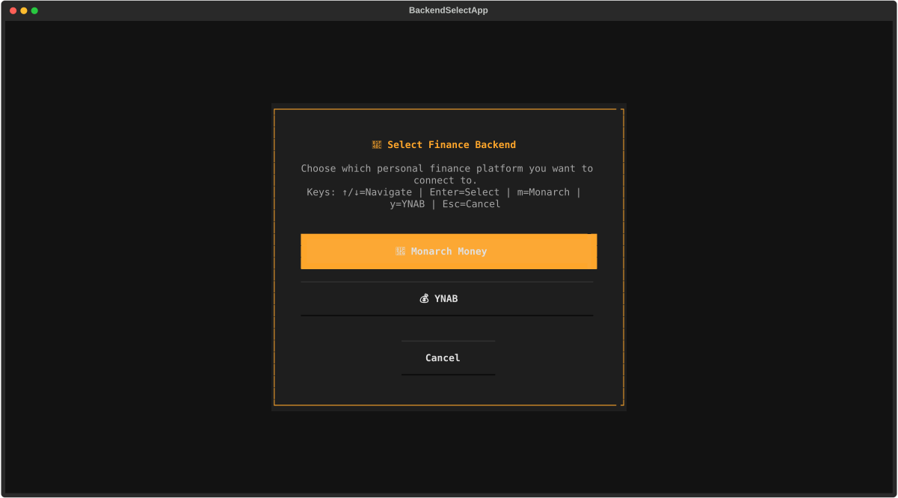
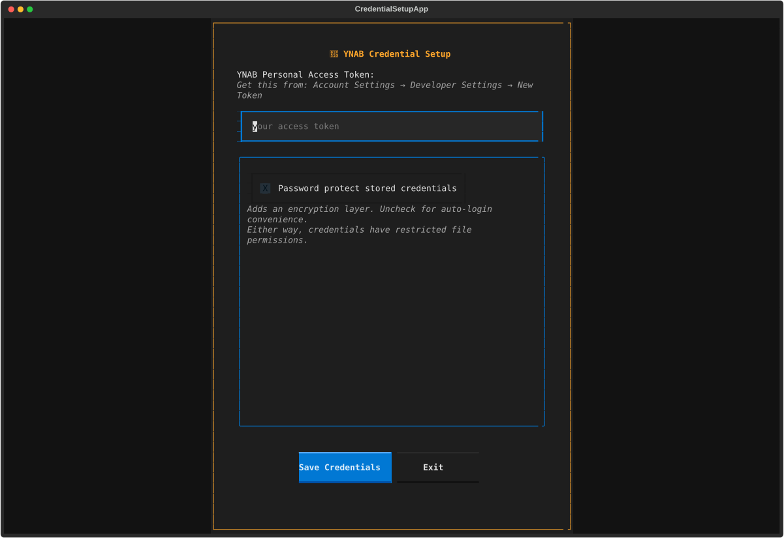

YNAB Integration
Terminal interface for YNAB (You Need A Budget) with full editing and sync capabilities.
Overview
- View and analyze budgeted transactions
- Edit payees, categories, and transaction fields
- Navigate by time, payee, category, and account
- Bulk edit with multi-select
- Real-time sync to YNAB
Prerequisites
- Active YNAB subscription
- Personal Access Token (see below for setup)
Getting Your Personal Access Token
- Log into YNAB
- Go to Account Settings → Developer Settings
- Click "New Token" under Personal Access Tokens
- Enter your YNAB password and click "Generate"
- Copy the token immediately (you can't view it again)
- Save to password manager
Info
moneyflow uses YNAB's official API. Personal Access Tokens provide secure authentication without requiring your YNAB password.
Initial Setup
1. Launch moneyflow
On first run, you'll be prompted to select a backend:

Select YNAB.
2. Enter YNAB Credentials
You'll see the credential setup screen:

Enter:
- Personal Access Token: The token you generated from YNAB Developer Settings
3. Create Encryption Password
Create a NEW password to encrypt your stored credentials:
- Only for moneyflow (not your YNAB password)
- Needed every time you launch
- Minimum 8 characters
Info
Token encrypted with AES-128/PBKDF2 (100k iterations) at ~/.moneyflow/credentials.enc
4. Budget Selection (if multiple budgets)
If you have multiple YNAB budgets, moneyflow will show a budget selector screen:
- Use ↑/↓ arrow keys to navigate between budgets
- Press Enter to select the highlighted budget
- Press Esc to cancel
The selected budget will be saved for future sessions, so you won't need to select it again unless you switch accounts or delete the account profile.
5. Initial Data Load
moneyflow will:
- Authenticate with YNAB API
- Fetch your transactions
- Download categories and account metadata
- Build the initial view
This takes 5-15 seconds depending on transaction count.
Subsequent Runs
After initial setup, launching moneyflow only requires your encryption password:
moneyflow will:
- Decrypt your stored credentials
- Authenticate with YNAB API
- Load your latest transaction data
Payee Management
moneyflow includes optimized features for managing YNAB payees (merchants).
Batch Renaming
When you rename a merchant in the transactions list, moneyflow will:
- Update the payee name in YNAB
- Automatically update ALL transactions associated with that payee
- This counts as a single API call, making it much faster than updating individual transactions
Merging Payees
If you rename a merchant to a name that already exists in ynab (e.g., renaming "Amazon.com" to "Amazon"):
- moneyflow will detect the existing payee
- ALL transactions from the old payee will be reassigned to the existing payee
- The old payee will be left with 0 transactions (you can delete it in YNAB later)
Duplicate Payees
If you have multiple payees with the exact same name in YNAB (duplicates), moneyflow will warn you and prevent batch updates to avoid data corruption. You should merge these duplicates in the YNAB web interface first.
Editing Transactions
All edits sync back to YNAB immediately after commit. See the Editing Guide for full details.
YNAB-specific notes:
- Payees (YNAB term) are called "merchants" in moneyflow UI
- Category changes respect YNAB's category structure
- Split transactions are not currently supported
Tracking Accounts
YNAB distinguishes between budget accounts (on-budget) and tracking accounts (off-budget):
Budget Accounts (on-budget)
- Checking, savings, credit cards, lines of credit
- Transactions affect your budget
- Visible by default in moneyflow
Tracking Accounts (off-budget)
- Investment accounts (401k, IRA, brokerage)
- Mortgages and loans
- Asset accounts (cars, real estate)
- Transactions do NOT affect your budget (tracked for net worth only)
- Hidden by default in moneyflow
Why Are Tracking Accounts Hidden?
Since tracking account transactions don't affect your budget, they're filtered out by default to keep your reports focused on actual spending and income.
Viewing Hidden Transactions
To see transactions from tracking accounts and other hidden items:
- Press
fto open the filter settings modal - Toggle the visibility settings for hidden transactions
- Hidden transactions are marked with an "H" in the flags column when visible
This applies to all hidden transactions, including:
- Tracking account transactions
- Deleted transactions
- Transfer transactions between accounts
- Transactions manually marked as hidden (using
hon individual transactions)
See the Keyboard Shortcuts guide for all available commands.
Tip
If you want to analyze investment contributions or mortgage payments specifically, press f to access filter
settings and show hidden transactions, then filter by account or use search to find what you need.
Reset Credentials
If you forget your encryption password or want to reconfigure:
Option 1: Reset from Unlock Screen
- Launch
moneyflow - Click "Reset Credentials" on the unlock screen
- Re-enter your YNAB Personal Access Token
Option 2: Manual Reset
Delete the credentials file and restart:
Troubleshooting
"Incorrect password" when unlocking
- You're entering the encryption password (the one YOU created for moneyflow)
- Not your YNAB password or token
- If you forgot it, click "Reset Credentials"
"Authentication failed" during login
- Check your Personal Access Token is correct
- Token may have expired - generate a new one from YNAB Developer Settings
- Make sure you copied the entire token with no spaces before/after
- Try logging into YNAB web app to ensure your account is active
"No budgets found"
- Ensure you have at least one budget in your YNAB account
- Try refreshing YNAB web app to sync data
Personal Access Token lost
YNAB only shows tokens once during generation. If you lose it:
- Go to YNAB Account Settings → Developer Settings
- Revoke the old token
- Generate a new token
- Update moneyflow: Click "Reset Credentials" or delete
~/.moneyflow/
Slow startup
Caching is enabled by default, so subsequent startups should be fast. If startup is slow:
- Use
--year 2025to limit data to the current year - Use
--refreshto force a fresh download if cache seems stale
Data Privacy & Security
Credentials encrypted locally. Data only sent to YNAB via official API. See Security Documentation.
Next Steps
- Editing Guide - Learn bulk operations and workflow
- Navigation & Search - Master the interface
- Keyboard Shortcuts - Essential keybindings
Limitations
Current limitations with YNAB integration:
- No transaction creation: Can't create new transactions (edit existing only)
- No account management: Can't add/remove accounts
- No category creation: Can't create custom categories (use existing ones)
- No split transactions: Can't split a transaction into multiple categories
- No budget operations: Can't modify budget amounts or goals
- No reconciliation: Can't mark accounts as reconciled
These features may be added in future releases.